Signal Detection Theory models
Gidon Frischkorn
Ven Popov
Source:vignettes/articles/bmm_sdt.Rmd
bmm_sdt.Rmd1 Signal detection theory in bmm
Signal detection theory (SDT) separates an observer’s sensitivity — how well
two classes of stimuli (signal vs. noise, old vs. new) can be told apart — from
their response bias — where they place the decision criterion
(Green and Swets 1966; DeCarlo 1998). bmm ships four SDT measurement models, one
per response format. Each is a self-contained model with its own data
requirements; they are not modes of a single function.
| Constructor | Response format | Key parameters | ROC defined? |
|---|---|---|---|
sdt_yn() |
counts of “signal”/“old” responses |
d, criterion, sdratio
|
yes |
sdt_rating() |
counts per confidence-rating category |
d, criterion, threshold params, sdratio
|
yes |
sdt_mafc() |
counts of correct m-AFC responses | d |
no |
sdt_ranking() |
counts per rank position |
d, sdratio (dist = "normal" only) |
no |
All four assume a latent evidence variable whose noise distribution is selected
with the dist argument: "normal" (Gaussian SDT), "logistic",
"gumbel_min" (extreme-value SDT), or "gumbel_max".
Two of the models — sdt_yn() and sdt_rating() — have an explicit
response criterion, so a receiver operating characteristic (ROC) curve and
its area under the curve (AUC) are defined. The m-AFC and ranking models
have no criterion: accuracy already integrates over the decision rule, so
roc_sdt() and auc_sdt() deliberately error for them. The latent
decision-variable distributions (latent_sdt()) and posterior predictive checks
(pp_check()) are available for all four — for the criterion-free models the
latent plot simply shows the noise and signal densities without a boundary line.
This article walks through fitting each model and then through the
post-processing toolkit: roc_sdt(), roc_observed(), auc_sdt(),
latent_sdt(), sdt_thresholds(), sdt_sensitivity(), the plot() methods
(including the quantile-transformed ROC via scale = "quantile"), and
pp_check().
1.1 The bmm workflow for SDT models
Fitting any of the four models follows the same recipe as every bmm model;
only the ingredients are SDT-specific.
-
Aggregate the data. All four models consume pre-aggregated counts, not
trial-level responses: one row per design cell (for example per subject and
stimulus type), with the counts in the columns the constructor names. If
your data hold one row per trial, aggregate them first (e.g. with
dplyr::count()orstats::aggregate()); the Rating SDT section below shows a real reshaping example. -
Create the model object. The constructor maps your column names onto the
model’s response format — for example
sdt_yn(response = "n_old", stimulus = "stimulus", n_trials = "n_trials")— and selects the noise distribution viadist. Printing the model object lists its parameters and data requirements. -
Specify the formula and fit.
bmf()takes one regression formula per model parameter, each with fullbrmssyntax: predictors for design effects and random effects such as(1 | id)for hierarchical estimation. Parameters you leave out of the formula are held fixed at their default — this is howsdratiostays at 0 (equal variance) until you addsdratio ~ 1.bmm()then compiles and samples the model throughbrms/Stan, and allbrmsarguments (cores,iter,prior,file, …) pass through. -
Post-process. The fitted object is a
brmsfit, so the generalbrmstoolkit applies (summary(),hypothesis(),brms::fixef(), …). The SDT-specific extractors add the signal-detection views: ROC curves, AUC, latent distributions, and threshold locations.
Every example below follows these four steps.
2 SDT in brief
All SDT models share one idea. On each trial the observer obtains a noisy sample
of evidence from a latent variable \(X\). Noise items and signal items generate
evidence from two distributions that overlap; the observer cannot see which
distribution a sample came from, only its value. For the Gaussian ("normal")
model the two distributions are
\[ X \mid \text{noise} \sim \mathrm{Normal}(0,\, 1), \qquad X \mid \text{signal} \sim \mathrm{Normal}(\delta,\, s^2), \]
where \(\delta\) is the mean separation and \(s\) is the signal-to-noise SD ratio
(the sdratio parameter, fixed to \(s = 1\) unless estimated). In a binary task
the observer responds “signal” whenever the evidence exceeds a criterion
\(k\). The two response probabilities are then tail areas of the two
distributions:
\[ \text{FA} = P(X > k \mid \text{noise}) = 1 - \Phi(k), \qquad \text{Hit} = P(X > k \mid \text{signal}) = 1 - \Phi\!\left(\tfrac{k - \delta}{s}\right). \]
Sensitivity is that separation expressed in standard-deviation units. With
equal variances (\(s = 1\), the default in every bmm SDT model) there is only one
SD to divide by, and the separation is the familiar \(d' = \delta\). That is the
d parameter in every formula below, and nothing else in this section changes
it.
Once \(s\) is estimated the two distributions have different SDs, so which one is the yardstick has to be stated. bmm then reports
\[ d_a = \frac{\delta}{\sqrt{(1 + s^2)/2}}, \]
the separation in units of the root-mean-square of the two SDs, which weights
noise and signal equally. Dividing by the noise SD instead gives \(d_N = \delta\)
(the \(d'\) of most unequal-variance analyses) and by the signal SD gives \(d_S\);
sdt_sensitivity() returns all three from a fitted model, and summary() adds a
note whenever d is \(d_a\). \(d_a\) is the default because it is the only one that
remains comparable across conditions whose \(s\) differs
(Simpson and Fitter 1973; Macmillan and Creelman 2005). The Binary SDT section below
shows how far the indices lie apart on real data.
bmm places the two distributions symmetrically, at \(-\delta/2\) and \(+\delta/2\),
and its criterion parameter is the boundary measured from their midpoint,
\(k - \delta/2\) in the notation above. The criterion is in noise-SD units whether
or not \(s\) is estimated.
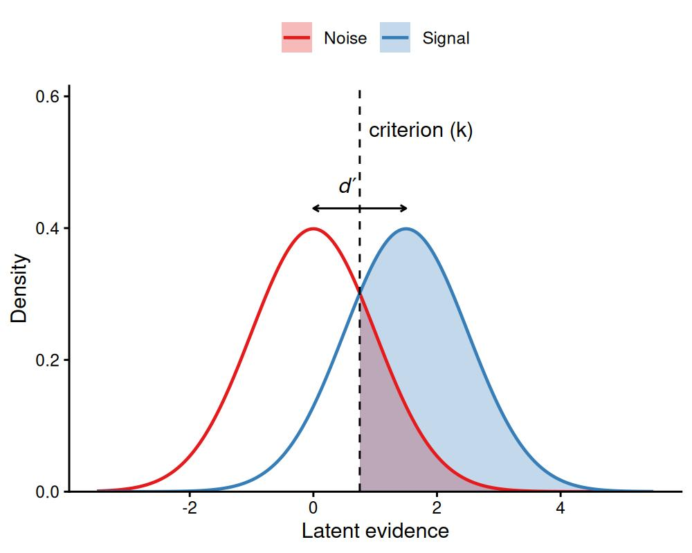
Figure 2.1: Latent evidence model. Noise and signal distributions overlap; responses above the criterion are labelled as signal. The shaded right tails are the false-alarm rate (noise) and the hit rate (signal); their separation is the sensitivity d-prime.
Sweeping the criterion from strict to lenient traces every (false-alarm, hit) pair the observer could produce — the receiver operating characteristic (ROC). When the two distributions have equal variance (\(s = 1\)) the ROC is symmetric about the minor diagonal; when the signal distribution is wider (\(s > 1\), as is typical for recognition memory) the ROC becomes asymmetric. This is why a single (hit, false-alarm) point cannot identify \(s\): separating \(d'\) from \(s\) requires several operating points along the curve.
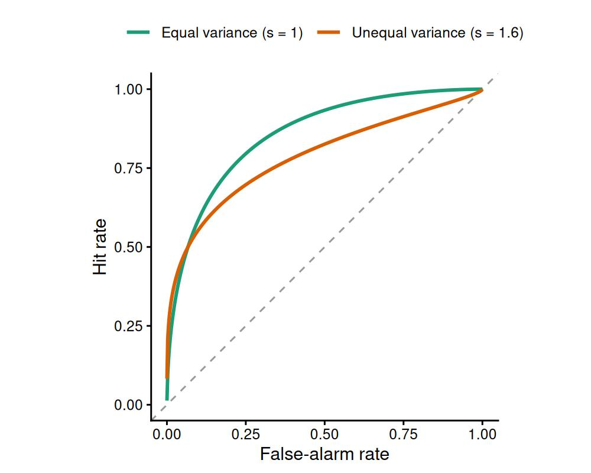
Figure 2.2: ROC geometry. Equal-variance models give a symmetric curve; unequal variance (wider signal distribution) bends it asymmetrically. The dashed line is chance (d’ = 0).
The four response formats below reuse this latent model and differ only in the
decision rule mapped onto it. The dist argument selects the shape of the
latent distributions; Gaussian is the safe default, but it is not the only
option. The next section explains the alternatives and when a non-Gaussian shape
is worth choosing.
3 Noise distributions
The Gaussian assumption in the model above is a modelling choice, not part of
SDT itself. Because the model never observes the latent samples — only the two
response probabilities — the shape of the noise distribution is exactly what
fixes the shape of the ROC. bmm exposes that choice through the dist argument, shared by
all four constructors: "normal", "logistic", "gumbel_min", and
"gumbel_max".
3.1 Why the shape matters
Although the Gaussian model is by far the most common, signal detection theory is not committed to it. The framework needs only two overlapping evidence distributions and a criterion; the shape of those distributions is a separate, substantive assumption. The Gaussian became the default for historical and mathematical reasons — Fechner’s and Thurstone’s psychophysics, and the pull of the central limit theorem — and Green and Swets (1966) adopted it on frankly pragmatic grounds (tractable mathematics) while conceding that other distributions would serve just as well (Meyer-Grant et al. 2026).
The choice is not cosmetic, because the shape of the distribution controls the shape of the ROC. Empirical recognition ROCs are almost always asymmetric: read off the z-axes, the operating points fall on a straight line with a slope below 1 (typically around 0.8), so the curve is pulled toward the upper-left rather than being symmetric about the minor diagonal (DeCarlo 1998). A model has to manufacture that asymmetry somehow, and there are two routes.
The first keeps the Gaussian distribution and spends a parameter on it: let the
signal distribution be wider than the noise distribution (\(s > 1\), the sdratio
parameter). This is the unequal-variance Gaussian model fitted in the Binary SDT
section below, and its zROC slope is exactly \(1/s\).
The second changes the distribution instead of adding a parameter. If the latent
evidence follows an extreme-value (Gumbel) distribution rather than a Gaussian, the
ROC comes out asymmetric intrinsically — with equal variance and one fewer
parameter. This is the extreme-value signal detection (EVSDT) model
(Meyer-Grant et al. 2026), and it is why sdt_ranking() defaults to "gumbel_min".
These two routes are easy to conflate, but ROC asymmetry and the variance ratio are in fact logically independent: a skewed equal-variance distribution can produce an asymmetric ROC, and unequal variances can produce a symmetric one (Meyer-Grant et al. 2026). Nor are the routes equally clean. The unequal-variance Gaussian buys the asymmetry at a conceptual cost: the extra variance it posits implies that some study events lower an item’s familiarity, its likelihood ratio is non-monotonic (so it can predict below-chance hit rates at extreme criteria), and the simple \(d'\) must give way to \(d_a\), which no longer guarantees that a larger value means a uniformly higher ROC (Meyer-Grant et al. 2026). The extreme-value route sidesteps all three.
3.2 Where the distributions come from
The deeper reason to care about the noise distribution is that it encodes an assumption about how an observer turns many noisy sensory or memory signals into a single decision variable. Two aggregation rules lead to two limiting shapes. If the evidence for an item is the sum or average of many small contributions, the central limit theorem drives the decision variable toward a Gaussian. If instead it is the most extreme contribution — the single strongest match, or the most glaring mismatch — the extreme-value theorem drives it toward a Gumbel distribution, in the same way and for the same mathematical reasons (Meyer-Grant et al. 2026; Robinson et al. 2023). Pooling gives the bell curve; a max (or min) rule gives the skew.
The parallel is exact: a signal-detection model with extreme-value noise and
a maximum decision rule is formally equivalent to the softmax (normalized
exponential) choice rule — that is, to Luce’s choice axiom (Yellott 1977; Robinson et al. 2023). Choosing the noise distribution is therefore also choosing a theory
of choice, and the link is visible in bmm: the m-AFC and ranking models decide by
comparing the maximum (or the rank order) of evidence across the m alternatives, so
an extreme-value distribution is their natural home — sdt_ranking() defaults to
"gumbel_min" for exactly this reason.
Whether human evidence is better described as pooled or as maximised is an empirical
question, and the answer can depend on the task. In recognition memory the
extreme-value model is principled and parsimonious, and can be grounded in a
behavioural invariance axiom rather than in distributional convenience
(Meyer-Grant et al. 2026). In visual working memory, by contrast, the Gaussian (pooling)
account reproduces a stable sensitivity across changes in the number of
alternatives, whereas the softmax (max-rule) account does not — favouring pooling in
that domain (Robinson et al. 2023). bmm keeps the distribution switchable so the
data can answer this question.
Statistically, the choice of distribution is the choice of a link function.
Written as a generalized linear model, SDT pairs the probit link with the Gaussian
model, the logit link with the logistic, and complementary-log-log links with the
extreme-value models (DeCarlo 1998) — the same correspondence bmm exposes through
dist.
3.3 The four options
dist |
Latent shape | Equal-variance ROC | Typical motivation |
|---|---|---|---|
"normal" |
symmetric (Gaussian) | symmetric, slope 1 | textbook default; pooling rule; comparability with the SDT literature |
"logistic" |
symmetric, heavier tails | very nearly symmetric | logit-link convenience; ≈ normal in criterion tasks |
"gumbel_min" |
skewed | asymmetric, slope < 1 | extreme-value / EVSDT; max-rule decisions |
"gumbel_max" |
mirror of "gumbel_min"
|
asymmetric, slope > 1 | completeness; opposite asymmetry, disfavoured for recognition |
Only two of these are live theoretical choices. "normal" and "gumbel_min" are
the SDT instantiations of the two aggregation rules above — pooling and the max
rule — and they are the only distributions sdt_ranking() offers, the model where
the choice bites hardest. The other two are best read as completeness options.
"logistic" is so close to "normal" once both are rescaled that the two are
nearly indistinguishable in the criterion-based models (its honest role is the logit
link for users coming from logistic regression, not a separate theory of evidence).
"gumbel_max" is the extreme-value family pointed the other way: it predicts the
opposite (slope > 1) asymmetry that recognition data rarely show, and the choice
rule it entails has been found empirically inadequate (Meyer-Grant et al. 2026; Robinson et al. 2023). It is kept for the rare opposite-asymmetry case and for
non-recognition tasks, not as a co-equal recognition model.
All four distributions enter the model in their standard form, with scale 1.
For the normal that scale is the SD, so d and criterion are in noise-SD
units. The standard logistic and Gumbel distributions have SDs of
\(\pi/\sqrt{3}\) and \(\pi/\sqrt{6}\), so under these distributions d and
criterion are in noise-scale units instead. The package output labels this
unit “noise SD” for all four.
3.4 How the distribution shapes the ROC
Under the extreme-value model the signal and noise distributions are skewed rather than symmetric (Figure 3.1). Sweeping a criterion across that skewed pair traces an asymmetric ROC — the same bend that unequal variance produces, but built into the distribution.
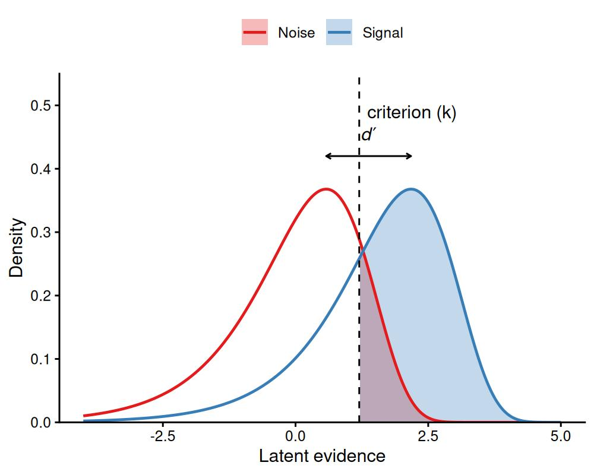
Figure 3.1: Latent evidence under the extreme-value (gumbel_min) model. Unlike the symmetric Gaussian distributions in the previous figure, both distributions are skewed (a long left tail). Sweeping the criterion over this skewed pair is what makes the ROC asymmetric, with no unequal-variance parameter.
The consequence for the ROC is direct. An equal-variance Gaussian gives a
symmetric curve; an equal-variance gumbel_min gives an asymmetric one that lands
almost on top of an unequal-variance Gaussian (Figure
3.2). The same asymmetry, bought with the distribution
rather than with an extra parameter.
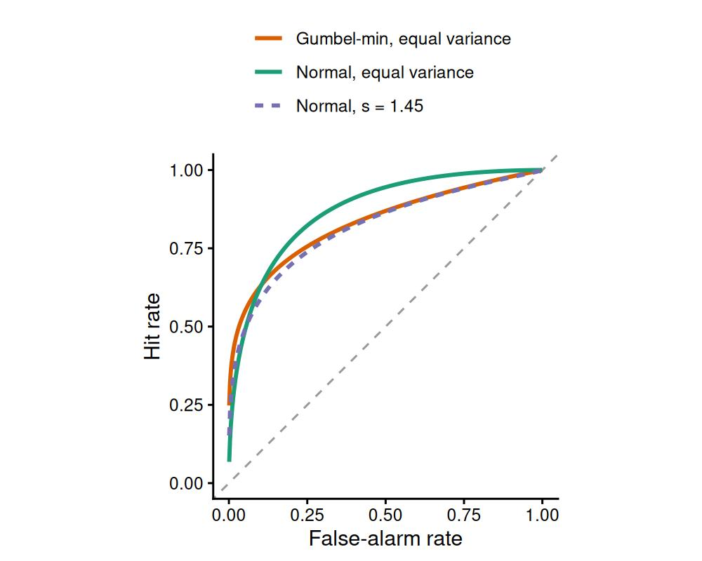
Figure 3.2: Model-implied ROCs at d’ = 1.6. The equal-variance Gaussian curve is symmetric; the equal-variance gumbel_min curve is asymmetric and nearly coincides with an unequal-variance Gaussian (s = 1.45). Hit(FA) = F((d’ + F^-1(FA)) / s), matching bmm’s roc_sdt().
3.5 Worked example: extreme value vs Gaussian
The cleanest test holds everything fixed except the distribution. We fit the
base-rate recognition data introduced in the next section
(broeder_schuetz_2009_e3) twice, with the same equal-variance formula, changing
only dist. Neither model estimates sdratio, so they have an identical number
of parameters — any difference in ROC shape is the distribution’s doing.
ev_formula <- bmf(d ~ 1 + (1 | id), criterion ~ 0 + condition + (1 | id))
fit_normal <- bmm(
formula = ev_formula,
data = broeder_schuetz_2009_e3,
model = sdt_yn(response = "n_old", stimulus = "stimulus",
n_trials = "n_trials", dist = "normal"),
backend = "cmdstanr", cores = 4, refresh = 0, silent = 2,
file = "assets/bmmfit_sdt_noise_normal_vignette"
)
fit_gumbel <- bmm(
formula = ev_formula,
data = broeder_schuetz_2009_e3,
model = sdt_yn(response = "n_old", stimulus = "stimulus",
n_trials = "n_trials", dist = "gumbel_min"),
backend = "cmdstanr", cores = 4, refresh = 0, silent = 2,
file = "assets/bmmfit_sdt_noise_gumbel_vignette"
)The post-processing helpers (roc_sdt(), roc_observed(), auc_sdt(), detailed
in the Binary SDT section) overlay each model-implied ROC on the observed operating
points.
plot(roc_sdt(fit_normal), observed = roc_observed(fit_normal))
plot(roc_sdt(fit_gumbel), observed = roc_observed(fit_gumbel))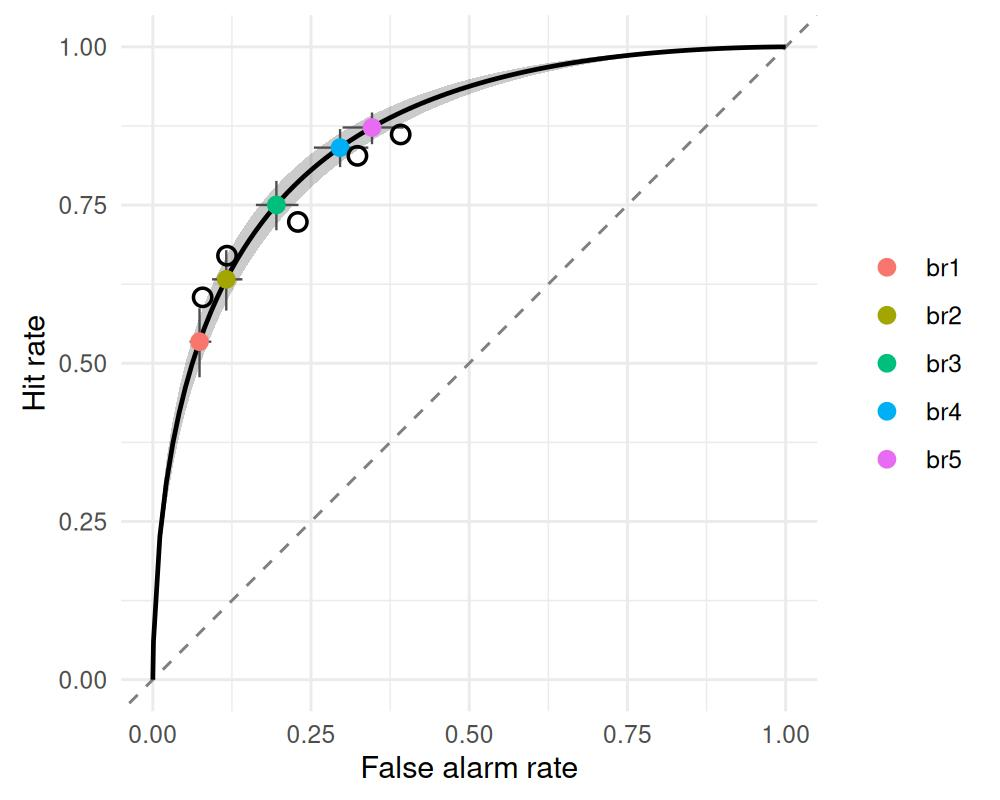
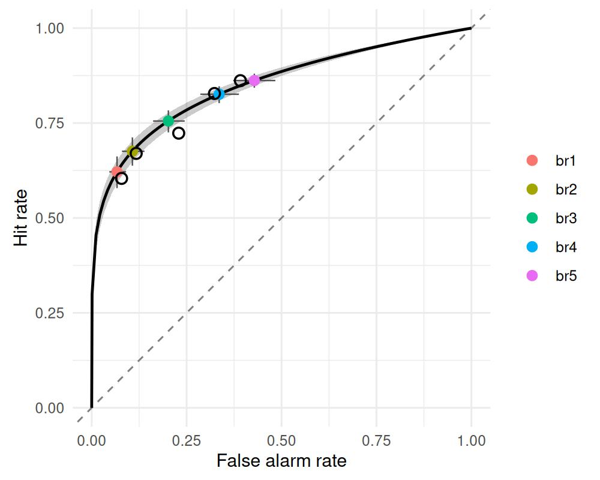
Figure 3.3: Equal-variance fits to the base-rate recognition data. Left: Gaussian noise forces a symmetric ROC that misses the operating points. Right: gumbel_min reproduces the asymmetric curve through the same points, with no sdratio parameter.
The equal-variance Gaussian is locked to a symmetric curve and systematically
misses the operating points; the equal-variance gumbel_min bends to follow them.
On z-transformed axes its model-implied operating points fall along a line with
slope 0.59, below one: the extreme-value model produces the
asymmetry that the Gaussian produces only by widening the signal distribution
(the quantile-transformed ROC section below sets this slope beside the
unequal-variance Gaussian fit). The two AUCs are similar (overall sensitivity is recovered either
way); the distribution shows up in the shape of the curve, not its area.
3.6 Choosing a noise distribution in practice
"normal" is the safe default and keeps results comparable with the bulk of the
SDT literature. Reach for "gumbel_min" when the ROC is asymmetric or when theory
motivates a max-rule process; it is the natural choice for ranking and forced-choice
tasks, and an equal-variance extreme-value model is often a more parsimonious
account of recognition asymmetry than an unequal-variance Gaussian. "logistic" is
mostly a numerical convenience, and "gumbel_max" covers the rare opposite
asymmetry. As always, let the data arbitrate: compare candidates with the
observed-versus-model ROC overlap and AUC shown above, with pp_check(), or with
loo() for a formal information criterion.
One caution on that comparison: the Gaussian model is the more flexible of the two — flexible enough to mimic extreme-value data closely, to the point that in simulations it wins on a clear majority of datasets that an extreme-value model actually generated (Meyer-Grant et al. 2026). A better Gaussian fit is therefore weak evidence on its own. The distributions are best told apart not by raw fit but by parsimony, by whether their parameters stay invariant when the design changes (for example across set sizes or numbers of alternatives) (Robinson et al. 2023), and by whether the implied decision process is plausible for the task at hand.
4 Binary SDT
In a binary old/new recognition task each cell of the design contributes a count
of “old” responses out of a number of trials, separately for old (signal) and
new (noise) items. The latent decision variable places “old” responses above a
criterion; sensitivity d is the distance between the signal and noise
distributions and criterion is the location of the boundary.
4.1 A single condition: equal-variance SDT
We simulate one condition with rsdt_yn() and fit an equal-variance model.
set.seed(123)
dat <- expand.grid(id = 1:30, stimulus = c(0L, 1L))
dat$n_trials <- 100L
dat$n_old <- rsdt_yn(nrow(dat), dat$n_trials, dat$stimulus,
d = 1.5, criterion = 0.2)
model <- sdt_yn(response = "n_old", stimulus = "stimulus",
n_trials = "n_trials")
fit_ev <- bmm(
formula = bmf(d ~ 1 + (1 | id), criterion ~ 1 + (1 | id)),
data = dat,
model = model,
backend = "cmdstanr",
cores = 4,
refresh = 0,
silent = 2,
file = "assets/bmmfit_sdt_yn_ev_vignette"
)
summary(fit_ev)#> Model: sdt_yn(response = "n_old",
#> stimulus = "stimulus",
#> n_trials = "n_trials")
#> Links: d = identity; criterion = identity; sdratio = log
#> Formula: d ~ 1 + (1 | id)
#> criterion ~ 1 + (1 | id)
#> sdratio = 0
#> Data: dat (Number of observations: 60)
#> Draws: 4 chains, each with iter = 2000; warmup = 1000; thin = 1;
#> total post-warmup draws = 4000
#>
#> Multilevel Hyperparameters:
#> ~id (Number of levels: 30)
#> Estimate Est.Error l-95% CI u-95% CI Rhat Bulk_ESS
#> sd(d_Intercept) 0.05 0.04 0.00 0.14 1.01 1747
#> sd(criterion_Intercept) 0.04 0.03 0.00 0.10 1.00 1144
#> Tail_ESS
#> sd(d_Intercept) 1504
#> sd(criterion_Intercept) 1555
#>
#> Regression Coefficients:
#> Estimate Est.Error l-95% CI u-95% CI Rhat Bulk_ESS Tail_ESS
#> d_Intercept 1.49 0.04 1.41 1.56 1.00 5525 2447
#> criterion_Intercept 0.17 0.02 0.13 0.21 1.00 3918 2902
#>
#> Constant Parameters:
#> Value
#> sdratio_Intercept 0.00
#>
#> Draws were sampled using sample(hmc). For each parameter, Bulk_ESS
#> and Tail_ESS are effective sample size measures, and Rhat is the potential
#> scale reduction factor on split chains (at convergence, Rhat = 1).The population estimates recover the simulated d = 1.5 and
criterion = 0.2.
By default sdratio is fixed to 0, i.e. the signal and noise distributions have
equal variance (exp(0) = 1) — it appears in the model’s parameter list but got
no formula, so it stays at its fixed default (step 3 of the workflow recipe).
With a single (hit, false-alarm) pair per subject the signal/noise variance
ratio is not identified, so leaving it fixed is the right default here, and d
in this fit is \(d'\) in the textbook sense.
4.2 Multiple criteria: identifying the unequal-variance ratio
When the criterion is shifted across conditions — for example by a base-rate or
payoff manipulation — while sensitivity is held constant, the several
(false-alarm, hit) points trace out a curve rather than a single point. That
curvature is what identifies the unequal-variance ratio sdratio — the
signal-to-noise SD ratio \(s\), whose reciprocal is the slope of the zROC
(DeCarlo 1998). The bundled broeder_schuetz_2009_e3 data
(Bröder and Schütz 2009) has exactly this structure: 40 subjects tested under five
base-rate conditions (br1 conservative … br5 liberal).
model <- sdt_yn(response = "n_old", stimulus = "stimulus",
n_trials = "n_trials")
fit_uv <- bmm(
formula = bmf(
d ~ 1 + (1 | id),
criterion ~ 0 + condition + (1 | id),
sdratio ~ 1
),
data = broeder_schuetz_2009_e3,
model = model,
backend = "cmdstanr",
cores = 4,
iter = 4000,
warmup = 1000,
thin = 3,
refresh = 0,
silent = 2,
file = "assets/bmmfit_sdt_yn_uv_vignette"
)
summary(fit_uv)#> Model: sdt_yn(response = "n_old",
#> stimulus = "stimulus",
#> n_trials = "n_trials")
#> Links: d = identity; criterion = identity; sdratio = log
#> Formula: d ~ 1 + (1 | id)
#> criterion ~ 0 + condition + (1 | id)
#> sdratio ~ 1
#> Data: broeder_schuetz_2009_e3 (Number of observations: 400)
#> Draws: 4 chains, each with iter = 4000; warmup = 1000; thin = 3;
#> total post-warmup draws = 4000
#>
#> Multilevel Hyperparameters:
#> ~id (Number of levels: 40)
#> Estimate Est.Error l-95% CI u-95% CI Rhat Bulk_ESS
#> sd(d_Intercept) 0.58 0.08 0.45 0.75 1.00 1980
#> sd(criterion_Intercept) 0.17 0.03 0.12 0.23 1.00 3059
#> Tail_ESS
#> sd(d_Intercept) 3048
#> sd(criterion_Intercept) 3701
#>
#> Regression Coefficients:
#> Estimate Est.Error l-95% CI u-95% CI Rhat Bulk_ESS
#> d_Intercept 1.49 0.10 1.29 1.68 1.00 1307
#> sdratio_Intercept 0.36 0.08 0.21 0.51 1.00 2494
#> criterion_conditionbr1 0.58 0.06 0.46 0.69 1.00 2675
#> criterion_conditionbr2 0.33 0.06 0.22 0.44 1.00 2506
#> criterion_conditionbr3 -0.06 0.06 -0.19 0.05 1.00 2464
#> criterion_conditionbr4 -0.45 0.07 -0.59 -0.32 1.00 2455
#> criterion_conditionbr5 -0.67 0.09 -0.85 -0.50 1.00 2590
#> Tail_ESS
#> d_Intercept 2298
#> sdratio_Intercept 3466
#> criterion_conditionbr1 3240
#> criterion_conditionbr2 3389
#> criterion_conditionbr3 3143
#> criterion_conditionbr4 3204
#> criterion_conditionbr5 3595
#>
#> Note: sdratio is not fixed at 0, so d is d_a (root-mean-square SD units), not the noise-standardized d'.
#> sdt_sensitivity() converts it to d' (noise SD) and d_S (signal SD).
#>
#> Draws were sampled using sample(hmc). For each parameter, Bulk_ESS
#> and Tail_ESS are effective sample size measures, and Rhat is the potential
#> scale reduction factor on split chains (at convergence, Rhat = 1).Here d and sdratio are shared across conditions while criterion varies
by condition — the five criteria are five operating points on a single ROC.
sdratio is estimated on the log scale, so exponentiate it for the SD ratio on
the natural scale:
exp(brms::fixef(fit_uv)["sdratio_Intercept", c("Estimate", "Q2.5", "Q97.5")])
#> Estimate Q2.5 Q97.5
#> 1.432103 1.231625 1.667237A value above 1 means the signal distribution is wider than the noise distribution, the classic recognition-memory pattern.
4.2.1 Which sensitivity index?
Once sdratio is free, “the” distance between the two distributions depends on
which standard deviation you measure it in, and d is no longer \(d'\) but \(d_a\),
the separation divided by the root-mean-square of the two SDs. The note below
the coefficient table of summary(fit_uv) says so. The alternatives are \(d_N\)
(divide by the noise SD, the \(d'\) that most unequal-variance analyses report)
and \(d_S\) (divide by the signal SD). sdt_sensitivity() returns any of them,
converting draw by draw so the intervals carry the joint uncertainty in d and
sdratio:
sens <- sdt_sensitivity(fit_uv)
sens
#> SDT sensitivity (sdt_yn, dist = normal)
#> da = RMS-SD units (estimated) | dn = noise-SD units (d') | ds = signal-SD units
#> measure mean lower upper condition
#> da 1.49 1.29 1.68 br1
#> da 1.49 1.29 1.68 br2
#> da 1.49 1.29 1.68 br3
#> da 1.49 1.29 1.68 br4
#> da 1.49 1.29 1.68 br5
#> dn 1.84 1.56 2.14 br1
#> dn 1.84 1.56 2.14 br2
#> dn 1.84 1.56 2.14 br3
#> dn 1.84 1.56 2.14 br4
#> dn 1.84 1.56 2.14 br5
#> ds 1.28 1.10 1.46 br1
#> ds 1.28 1.10 1.46 br2
#> ds 1.28 1.10 1.46 br3
#> ds 1.28 1.10 1.46 br4
#> ds 1.28 1.10 1.46 br5For readers who know \(d'\). The classical index and bmm’s d differ by the
factor \(\sqrt{(1 + s^2)/2}\), that is \(d_N = d_a \sqrt{(1 + s^2)/2}\). The factor
is 1 under equal variance and grows with the SD ratio:
| SD ratio \(s\) | \(d_N / d_a\) |
|---|---|
| 0.80 | 0.91 |
| 1.00 | 1.00 |
| 1.25 | 1.13 |
| 1.50 | 1.27 |
| 2.00 | 1.58 |
For the base-rate data the posterior mean of \(d_N\) is
24% larger than the posterior mean of d. A
\(d'\) published for similar data under unequal variance should therefore be
compared with the dn row above, not with d.
Under equal variance all three are the same number, which is why the
distinction only appears once sdratio is estimated. \(d_a\) is the default
because it is the only one of the three that stays comparable across conditions
that differ in sdratio: two conditions that are exactly equally discriminable
can show a large, confidently estimated \(d_N\) difference purely because their
variance ratios differ. When sdratio is estimated but shared by the conditions
you compare, as in this fit, the three indices differ by one common factor and
give the same contrasts up to scale. Report \(d_N\) or \(d_S\) when you need to line
up with a literature that uses them, but prefer \(d_a\) for contrasts.
Two further points apply to unequal-variance fits. First, criterion is not
converted: it stays in noise-SD units whichever sensitivity index you report,
so a ratio such as criterion / d mixes two scales. Second, for
dist = "normal" the index \(d_a\) is also the AUC-equivalent index,
\(d_a = \sqrt{2}\,\Phi^{-1}(\mathrm{AUC})\). Under the Gumbel distributions that
identity only holds with equal variance, so compare unequal-variance Gumbel fits
with auc_sdt() rather than on d.
4.3 ROC and AUC
roc_sdt() returns the model-implied ROC from the posterior. For a binary fit it
traces the smooth analytical curve from the posterior of d (and sdratio
when estimated). When it detects a predictor that varies the criterion only — as
condition does above — it additionally returns the model-implied operating
points (one per criterion level) in a points attribute. roc_observed() gives
the empirical operating points straight from the response counts, and the
plot() method overlays everything.
roc <- roc_sdt(fit_uv)
obs <- roc_observed(fit_uv)
plot(roc, observed = obs)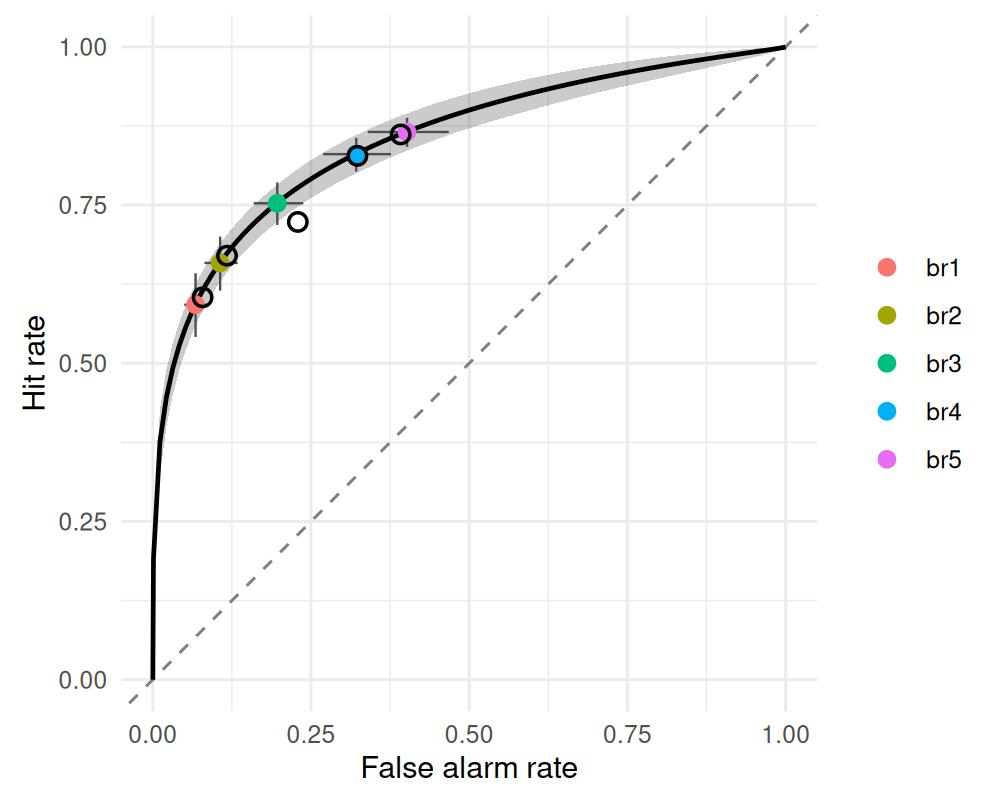
The smooth ribbon is the posterior ROC, the filled points with crosshairs are the
model-implied operating points per base-rate condition, and the open circles are
the observed points. A curvilinear ROC that is asymmetric about the minor
diagonal is the signature of unequal variance (sdratio > 1).
auc_sdt() returns the posterior area under the curve. For equal-variance
binary fits it uses the closed forms \(\Phi(d'/\sqrt{2})\) (Gaussian) and
\(\mathrm{logistic}(g')\) (Gumbel-min and Gumbel-max); every other case — unequal
variance, the logistic distribution, and all rating fits — is integrated
numerically over the model-implied curve. The returned AUC is always the area
under the full curve (one value per curve, not the area spanned by the discrete
points).
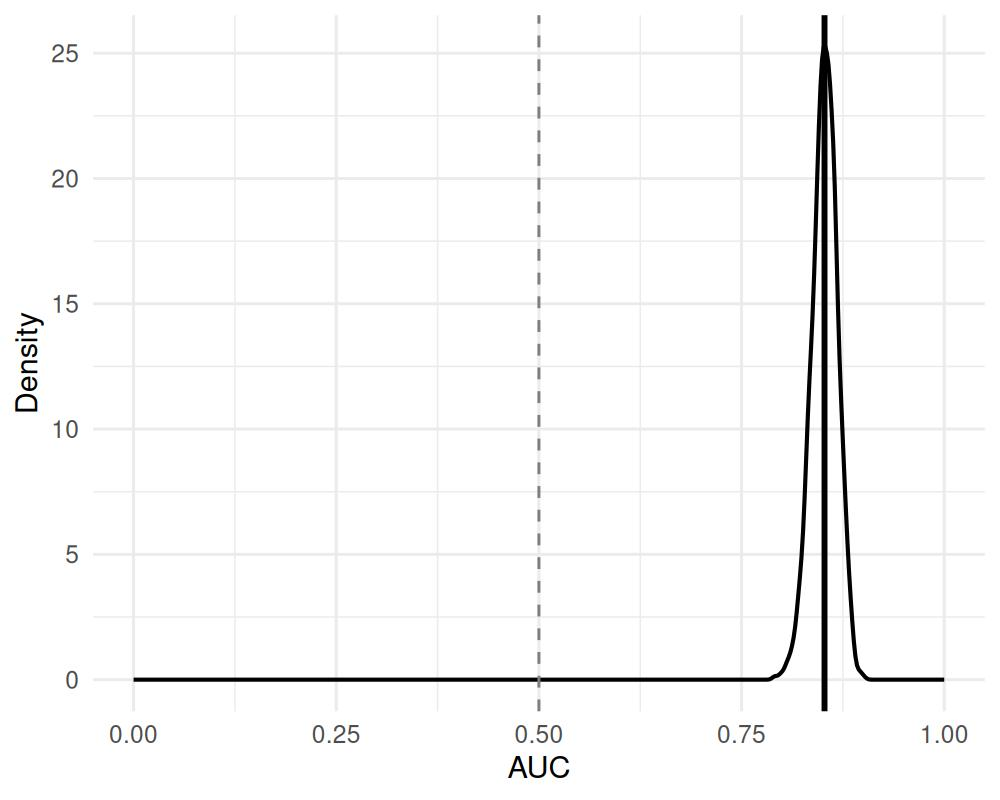
attr(auc, "summary")
#> AUC_mean AUC_lower AUC_upper
#> 1 0.8522991 0.8194102 0.88174384.4 Quantile-transformed ROC and latent distributions
Passing scale = "quantile" to the ROC plot() method reads the rates on the
noise distribution’s quantile axis via the transform \(-q(1 - \text{rate})\),
where \(q\) is the inverse CDF of the fitted noise distribution
(\(\Phi^{-1}(\text{rate})\) for the Gaussian model). The axis label names the
transform: z for the normal (the classic
z-ROC, and scale = "z" is accepted as an alias), logit for the logistic, and
loglog/cloglog for the Gumbel distributions. On this axis the model ROC is
a straight line for every noise distribution, with slope
\(1/\exp(\mathtt{sdratio})\) and intercept
\(\delta/\exp(\mathtt{sdratio})\), where \(\delta\) is the separation in noise-scale
units (the \(d_N\) that sdt_sensitivity() reports, not the fitted d), so
a slope below 1 is the visual signature of unequal variance and observed points
that bow away from a straight line flag misfit. (The \((0,0)\) and
\((1,1)\) endpoints map to infinity and are dropped.)
plot(roc, observed = obs, scale = "quantile")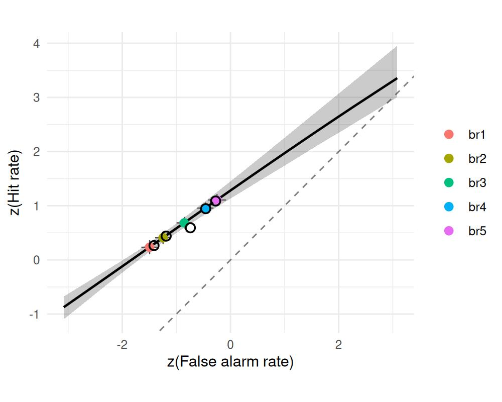
For the base-rate data the fitted slope is 0.70
(95% CrI [0.60, 0.81]).
The equal-variance gumbel_min fit from the noise-distribution section implied a
slope of 0.59 through the same operating points, without an
sdratio parameter.
latent_sdt() reconstructs the latent decision-variable distributions
themselves: the noise and signal evidence densities, separated by the
noise-SD distance \(d_N\) and scaled by exp(sdratio), with the criterion drawn as a dashed line carrying a
credible band on its location. This is the picture the criterion and d
estimates describe. Here the criterion varies across the base-rate conditions but
d/sdratio do not, so the densities are identical across conditions:
latent_sdt() collapses them into one panel and overlays the several criteria,
colour-coded by condition (pass collapse = FALSE for one panel per condition).
plot(latent_sdt(fit_uv))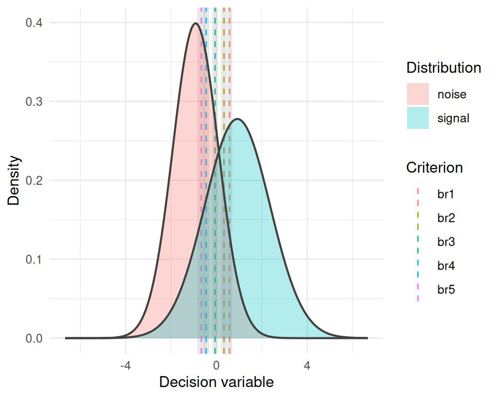
4.5 Posterior predictive checks
sdt_yn() uses a custom binomial family, so pp_check() delegates to
brms. The “old”-response counts span a wide range whose ceiling differs across
cells (the base-rate conditions have different numbers of trials), so the bar
view is cluttered and hard to read. An overlaid empirical CDF split by stimulus
type is a cleaner check that the model reproduces the response distributions for
signal and noise items — and the ROC plot above already checks the operating
points directly:
pp_check(fit_uv, type = "ecdf_overlay", group = "stimulus", ndraws = 100)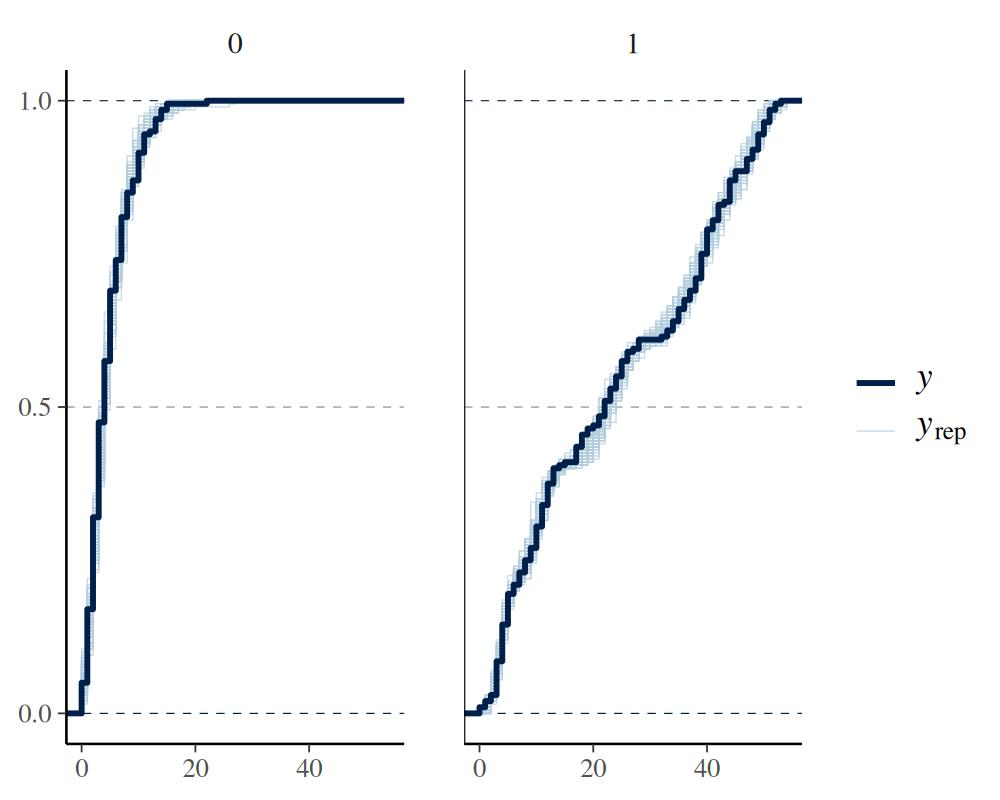
5 Rating SDT
In a confidence-rating task each item is judged on an ordered scale (e.g. 1 =
“sure new” … 6 = “sure old”). The data are counts per rating category, one column
per category. Internally bmm fits this with brms’ native multinomial family;
the K-1 confidence criteria are parameterized by a threshold_type
(Selker et al. 2019; Paulewicz and Blaut 2020, 2022).
We use a real recognition ROC dataset. The roc6 object in the
MPTinR package collects 12 published
old/new recognition experiments as per-subject counts of old and new items across
a 6-point confidence scale. Here we take Pratte et al. (2010) (97 subjects, 240 trials per
stimulus class — narrow posteriors, clear effects) and reshape it to the format
sdt_rating() expects: one row per (subject × stimulus), with categories
r1 = “sure new” … r6 = “sure old”.
stopifnot(requireNamespace("MPTinR", quietly = TRUE))
data("roc6", package = "MPTinR")
pratte <- roc6[roc6$exp == "Pratte_2010", ]
rating_data <- rbind(
data.frame(id = pratte$id, stimulus = 1L,
r1 = pratte$OLD_3new, r2 = pratte$OLD_2new, r3 = pratte$OLD_1new,
r4 = pratte$OLD_1old, r5 = pratte$OLD_2old, r6 = pratte$OLD_3old),
data.frame(id = pratte$id, stimulus = 0L,
r1 = pratte$NEW_3new, r2 = pratte$NEW_2new, r3 = pratte$NEW_1new,
r4 = pratte$NEW_1old, r5 = pratte$NEW_2old, r6 = pratte$NEW_3old)
)
model <- sdt_rating(response = paste0("r", 1:6), stimulus = "stimulus")
# Recognition ROCs are classically asymmetric, so estimate unequal variance
fit_rating <- bmm(
formula = bmf(d ~ 1 + (1 | id), criterion ~ 1 + (1 | id),
spacing ~ 1, sdratio ~ 1),
data = rating_data,
model = model,
backend = "cmdstanr",
cores = 4,
refresh = 0,
silent = 2,
chains = 4,
iter = 7000,
warmup = 1000,
thin = 6,
file = "assets/bmmfit_sdt_rating_vignette"
)
summary(fit_rating)#> Model: sdt_rating(response = paste0("r", 1:6),
#> stimulus = "stimulus")
#> Links: d = identity; criterion = identity; spacing = identity; sdratio = identity
#> Formula: d ~ 1 + (1 | id)
#> criterion ~ 1 + (1 | id)
#> spacing ~ 1
#> sdratio ~ 1
#> Data: (Number of observations: 194)
#> Draws: 4 chains, each with iter = 7000; warmup = 1000; thin = 6;
#> total post-warmup draws = 4000
#>
#> Multilevel Hyperparameters:
#> ~id (Number of levels: 97)
#> Estimate Est.Error l-95% CI u-95% CI Rhat Bulk_ESS
#> sd(d_Intercept) 0.53 0.04 0.46 0.62 1.00 2716
#> sd(criterion_Intercept) 0.33 0.03 0.28 0.38 1.00 2881
#> Tail_ESS
#> sd(d_Intercept) 3372
#> sd(criterion_Intercept) 3186
#>
#> Regression Coefficients:
#> Estimate Est.Error l-95% CI u-95% CI Rhat Bulk_ESS Tail_ESS
#> d_Intercept 1.10 0.06 0.99 1.21 1.00 1725 2774
#> criterion_Intercept -0.03 0.03 -0.09 0.04 1.00 1522 2282
#> spacing_Intercept -0.26 0.01 -0.27 -0.25 1.00 4134 3955
#> sdratio_Intercept 0.35 0.01 0.33 0.37 1.00 4133 3778
#>
#> Note: sdratio is not fixed at 0, so d is d_a (root-mean-square SD units), not the noise-standardized d'.
#> sdt_sensitivity() converts it to d' (noise SD) and d_S (signal SD).
#>
#> Draws were sampled using sample(hmc). For each parameter, Bulk_ESS
#> and Tail_ESS are effective sample size measures, and Rhat is the potential
#> scale reduction factor on split chains (at convergence, Rhat = 1).5.1 Threshold parameterizations
A rating model is binary SDT with several criteria at once: for a \(K\)-point scale the \(K-1\) thresholds carve the latent evidence axis into \(K\) ordered response bins. The probability of each rating is the area of the corresponding bin under the signal or noise distribution.
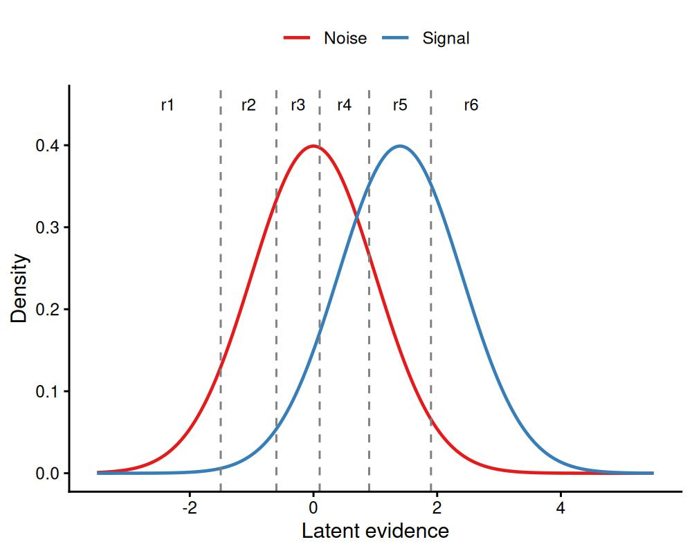
Figure 5.1: A 6-point rating scale places K-1 = 5 thresholds on the evidence axis, splitting it into six ordered confidence bins. threshold_type governs how these thresholds are spaced.
The threshold_type argument controls how those \(K-1\) criteria are placed and
therefore how many parameters they cost:
-
"parsimonious"(default) and"equidistant": two parameters (criterion+spacing) — the thresholds are evenly spaced around the criterion, differing only in their canonical anchor positions (Selker et al. 2019). -
"log_distance"and"log_ratio": K-2deltaparameters that allow uneven spacing while guaranteeing the thresholds stay ordered (Paulewicz and Blaut 2022). -
"softmax": a sharedspacingplus K-3 allocationdeltaparameters.
Add sdratio ~ 1 to the formula to estimate unequal variance.
5.2 ROC, AUC, and observed ROC
For a rating model the K-1 thresholds define K-1 ROC points per posterior draw.
roc_sdt() returns those points together with the smooth model-implied ROC curve
traced from the posterior of d (and sdratio); plot() shows that curve
as a credible-band ribbon with the K-1 thresholds overlaid as colour-coded
operating points (t1..t(K-1)) carrying crosshair credible intervals — the same
display as the binary ROC. roc_observed() gives the empirical points from the
pooled counts. The quantile axis (scale = "quantile") works here too.
roc <- roc_sdt(fit_rating)
plot(roc, observed = roc_observed(fit_rating))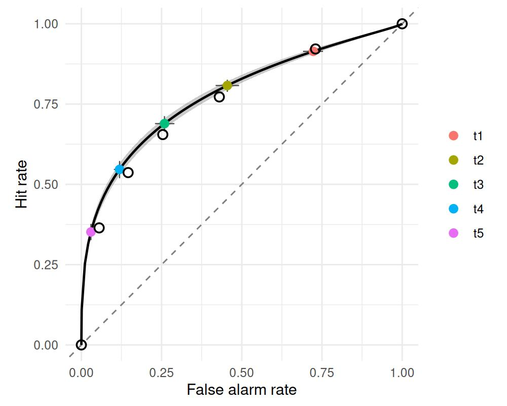
5.3 Posterior predictive checks
Because the rating model uses a multinomial family, pp_check() produces a
response-proportion profile (observed bars vs. posterior-predictive
point-ranges). For SDT the signal and noise rating distributions should be
checked separately, so pp_check() defaults to faceting by stimulus:
pp_check(fit_rating, ndraws = 100)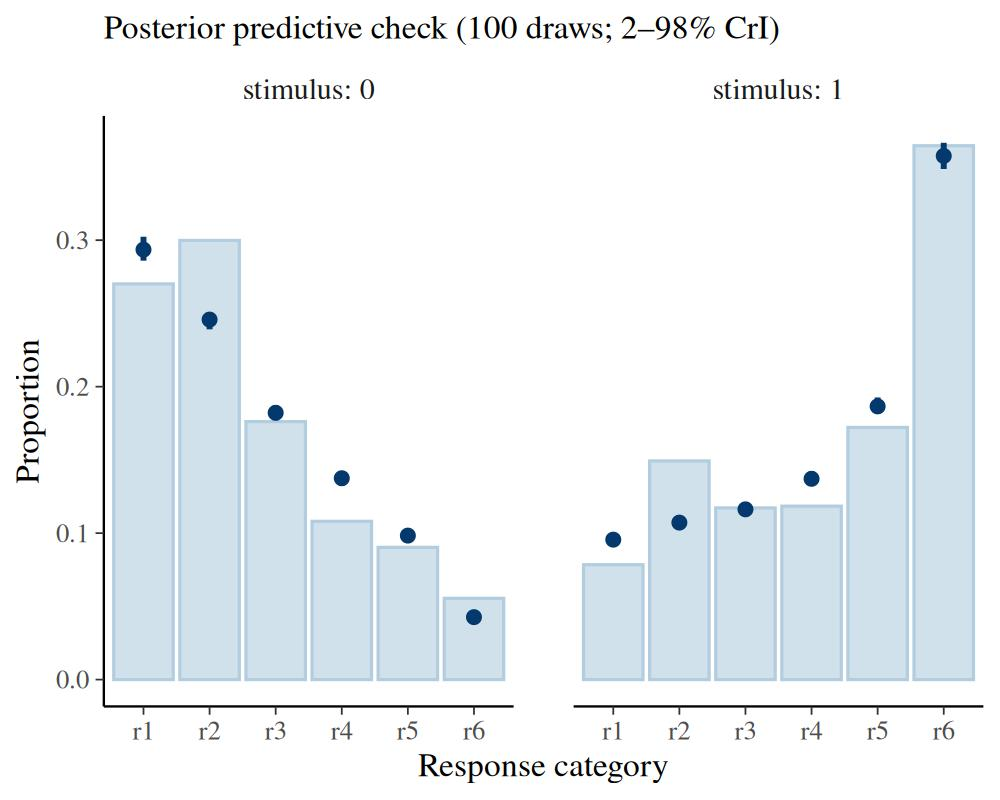
Pass group = NA to pool both stimulus types into a single profile, or
group = "<predictor>" to facet by another design variable.
The predicted point-ranges track the observed bars closely at the extreme
categories but deviate systematically for the interior categories (r3–r5):
the misses are smooth and one-sided rather than random scatter. That pattern is
the fingerprint of threshold misfit. The default "parsimonious"
parameterization buys its economy (two threshold parameters) by fixing the K-1
criteria at regularly spaced canonical positions, and when the true confidence
thresholds are unevenly spaced — as they usually are in recognition data — those
two parameters cannot reproduce the full rating profile.
5.4 Improving fit with flexible thresholds
The "log_ratio" parameterization frees the spacing with K-2 delta parameters,
so the thresholds can sit wherever the data require. For a 6-point scale they are
delta1 … delta4, one per interval between adjacent thresholds: delta3 is the
log width of the interval just above the criterion, and each of the others is the
log ratio of an interval to its neighbour nearer the criterion (printing the model
object lists what each delta measures). Refit with it and re-run the same
check:
model_lr <- sdt_rating(response = paste0("r", 1:6), stimulus = "stimulus",
threshold_type = "log_ratio")
fit_rating_lr <- bmm(
formula = bmf(d ~ 1 + (1 | id), criterion ~ 1 + (1 | id),
delta1 ~ 1, delta2 ~ 1, delta3 ~ 1, delta4 ~ 1,
sdratio ~ 1),
data = rating_data,
model = model_lr,
backend = "cmdstanr",
cores = 4,
chains = 4,
iter = 4000,
warmup = 1000,
thin = 3,
refresh = 0,
silent = 2,
file = "assets/bmmfit_sdt_rating_logratio_vignette"
)
pp_check(fit_rating_lr, ndraws = 100)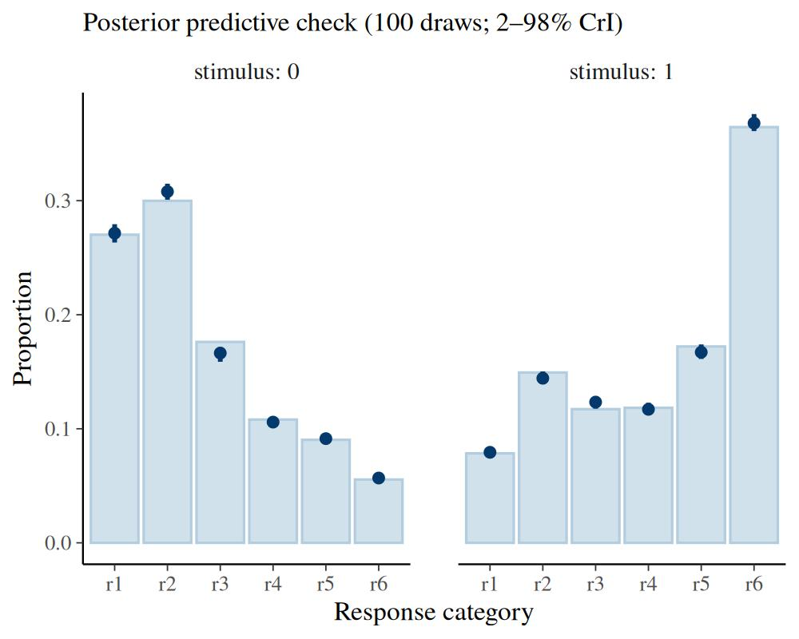
The interior categories are now captured: the flexible thresholds absorb the
systematic deviation that the parsimonious model could not. The improvement is
not free — it costs four threshold parameters (the deltas) instead of two — so
it should be weighed against the gain in fit.
For these models the posterior predictive check is the most practical guide to
that trade-off: a parameterization that leaves systematic, one-sided deviations
is too rigid, while one whose predicted point-ranges sit on the observed bars (as
here) is adequate. A formal predictive comparison is tempting, but the usual
loo() is not appropriate here: each observation is an aggregated count over
many trials, so leaving one out removes a large, highly influential chunk of data
and the PSIS-LOO approximation becomes unreliable — it flags most observations
with a high Pareto-\(k\), and (because that reflects heavy-tailed importance weights
rather than Monte Carlo noise) more posterior draws will not fix it. The
principled alternative for aggregated data is k-fold cross-validation via
brms::kfold(), which refits on held-out folds and avoids importance sampling
altogether. "log_distance" behaves like "log_ratio", and "softmax" offers an
intermediate option with a shared spacing plus fewer free deltas.
5.5 Extracting the thresholds
The delta parameters are only interpretable through the parameterization that
maps them to threshold locations. sdt_thresholds() performs that mapping: it
reconstructs the K-1 thresholds per posterior draw on the latent
decision-variable scale, so the confidence criteria can be reported directly,
whatever the threshold_type.
attr(sdt_thresholds(fit_rating_lr), "summary")
#> marker position lower upper
#> 1 t1 -1.3041170 -1.37289582 -1.2385101
#> 2 t2 -0.4071132 -0.47385795 -0.3430747
#> 3 t3 0.0981242 0.03145709 0.1634927
#> 4 t4 0.5160744 0.44915164 0.5801853
#> 5 t5 1.1056789 1.03838991 1.1714890latent_sdt() shows the same thresholds in context — the noise and signal
evidence densities with the K-1 confidence criteria cutting the axis into the
six rating bins, each threshold carrying the credible band on its location. The
uneven spacing the log_ratio fit recovered (and the parsimonious model could
not) is directly visible:
plot(latent_sdt(fit_rating_lr))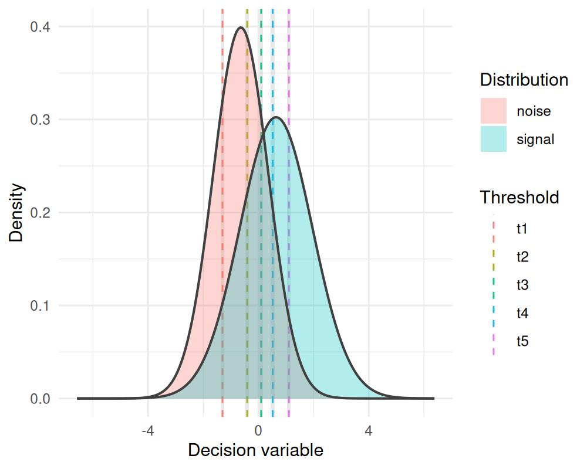
6 m-AFC SDT
In an m-alternative forced-choice task the observer picks the target among m
alternatives; the data are counts of correct responses. There is no criterion and
no stimulus column — accuracy alone identifies d (DeCarlo 2012). A correct
response occurs when the target’s evidence exceeds that of all \(m-1\) distractors;
d is \(d'\), the target–distractor separation. sdt_mafc() has no sdratio,
and its d is on the same scale as the d of sdt_yn(), including the \(d_a\)
that sdt_yn() reports once its sdratio is estimated (exactly so for Gaussian
noise; see ?sdt_mafc). For \(m = 2\) the Gaussian model has the closed form
\(\Phi(d/\sqrt{2})\), and for \(m \geq 3\) the Gaussian and logistic models evaluate
the accuracy by quadrature while both Gumbel models stay in closed form. The set size m may be a constant or a data column (for mixed set
sizes).
One caveat matters when interpreting d here. At a single set size,
percent correct is a single number, and any evidence distribution can reproduce
it with a suitable d — the Gaussian-evidence-plus-max-rule assumption is
a convention the data at one m cannot test. This is a general property of
best-choice data: choice probabilities underdetermine the latent evidence model
that generates them (Falmagne 1978; Kilani and Colonius 2026). What gives the
distributional assumption empirical content is varying the set size within an
experiment: different evidence distributions imply different accuracy-versus-m
curves, so passing m as a data column with mixed set sizes is what makes the
choice of evidence distribution testable at all.
# rsdt_mafc() is vectorised over its arguments; varying d by subject
# gives hierarchical data.
set.seed(123)
dat <- data.frame(id = 1:30, n_trials = 100L)
dat$n_correct <- rsdt_mafc(nrow(dat), dat$n_trials, m = 4,
d = rnorm(30, mean = 1.5, sd = 0.3))
model <- sdt_mafc(response = "n_correct", n_trials = "n_trials", m = 4)
fit_mafc <- bmm(
formula = bmf(d ~ 1 + (1 | id)),
data = dat,
model = model,
backend = "cmdstanr",
cores = 4,
refresh = 0,
silent = 2,
file = "assets/bmmfit_sdt_mafc_vignette"
)
summary(fit_mafc)#> Model: sdt_mafc(response = "n_correct",
#> n_trials = "n_trials",
#> m = 4)
#> Links: d = identity
#> Formula: d ~ 1 + (1 | id)
#> Data: dat (Number of observations: 30)
#> Draws: 4 chains, each with iter = 2000; warmup = 1000; thin = 1;
#> total post-warmup draws = 4000
#>
#> Multilevel Hyperparameters:
#> ~id (Number of levels: 30)
#> Estimate Est.Error l-95% CI u-95% CI Rhat Bulk_ESS Tail_ESS
#> sd(d_Intercept) 0.25 0.05 0.16 0.36 1.00 1245 2132
#>
#> Regression Coefficients:
#> Estimate Est.Error l-95% CI u-95% CI Rhat Bulk_ESS Tail_ESS
#> d_Intercept 1.46 0.06 1.35 1.57 1.00 1584 1872
#>
#> Draws were sampled using sample(hmc). For each parameter, Bulk_ESS
#> and Tail_ESS are effective sample size measures, and Rhat is the potential
#> scale reduction factor on split chains (at convergence, Rhat = 1).ROC curves are undefined here (roc_sdt(fit_mafc) errors), but latent_sdt()
still works: it shows the noise and signal evidence densities the estimated d
implies (the noise density stands for each of the \(m-1\) distractors), now without
a criterion line because the decision is a max rule over the alternatives.
Setting show_competitors = TRUE overlays the density of the maximum of the
\(m-1\) distractor samples — the effective competitor the target must beat — which
shifts rightward as \(m\) grows and shows directly why accuracy falls with set
size.
plot(latent_sdt(fit_mafc, show_competitors = TRUE))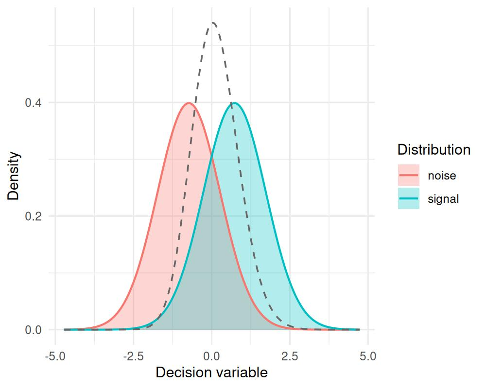
Each subject contributes one correct-response count, so a bar per count value is sparse and noisy; an overlaid empirical CDF of the correct-response counts is a compact check that the model captures the spread of accuracy across subjects:
pp_check(fit_mafc, type = "ecdf_overlay", ndraws = 100)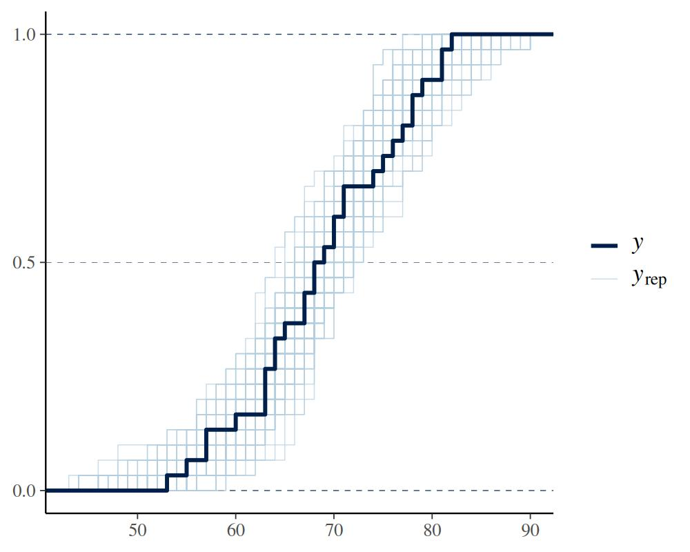
7 Ranking SDT
In a ranking task the observer orders m items by evidence and the data are
counts per rank position assigned to the target (Meyer-Grant et al. 2026). As with
m-AFC there is no criterion: the rank assigned to the target is an order
statistic of the latent evidence, so the probability of each rank follows from
the evidence distribution directly. With dist = "gumbel_min" these rank
probabilities have a closed form (the extreme-value assumption that makes ranking
analytically tractable); dist = "normal" is also available and evaluated by
quadrature — prefer gumbel_min for speed (its closed form is exact), and
normal for Gaussian evidence comparable to the other SDT models (the classical
Thurstonian ranking assumption). d is \(d'\) (the \(g'\) of Meyer-Grant et al. (2026) under
gumbel_min); with dist = "normal" and sdratio ~ 1 it becomes \(d_a\) as in
the other models. Ranking has no criterion, so here \(d_a\) is not read off an ROC:
it keeps d on one scale across the family, and it fixes two-item accuracy at
\(\Phi(d/\sqrt{2})\) whatever the SD ratio. The model uses the native
multinomial family with one category per rank
position, and m may again be a constant or a column for mixed set sizes. The
bundled meyer_grant_jakob_2025 data (Meyer-Grant and Jakob 2025) illustrate the
wide format.
Ranking responses are not just another response format — they are formally richer than forced-choice responses. Best-choice probabilities are marginals of the underlying distribution over rankings, and with four or more alternatives infinitely many ranking distributions are consistent with the same choice probabilities (Falmagne 1978; Kilani and Colonius 2026). A ranking task observes the target’s position in the ordering directly rather than only whether it won, which is the formal reason the paradigm supports stronger inferences about the evidence distribution than m-AFC accuracy does (Meyer-Grant et al. 2026). One limit remains even here: rank probabilities identify the distribution over orderings, not the joint distribution of the latent evidence behind it — in the max-Gumbel (Plackett–Luce) family, for example, independent and copula-dependent evidence models produce identical ranking probabilities (Kilani 2025). Independence of the evidence samples therefore stays a modeling convention in the ranking models too.
model <- sdt_ranking(
response = c("rank1", "rank2", "rank3", "rank4", "rank5"),
m = "set_size",
dist = "gumbel_min"
)
fit_rank <- bmm(
formula = bmf(d ~ 1 + (1 | id)),
data = meyer_grant_jakob_2025,
model = model,
backend = "cmdstanr",
cores = 4,
refresh = 0,
silent = 2,
file = "assets/bmmfit_sdt_ranking_vignette"
)
summary(fit_rank)#> Model: sdt_ranking(response = c("rank1", "rank2", "rank3", "rank4", "rank5"),
#> m = "set_size",
#> dist = "gumbel_min")
#> Links: d = identity
#> Formula: d ~ 1 + (1 | id)
#> Data: (Number of observations: 180)
#> Draws: 4 chains, each with iter = 2000; warmup = 1000; thin = 1;
#> total post-warmup draws = 4000
#>
#> Multilevel Hyperparameters:
#> ~id (Number of levels: 60)
#> Estimate Est.Error l-95% CI u-95% CI Rhat Bulk_ESS Tail_ESS
#> sd(d_Intercept) 0.30 0.03 0.24 0.37 1.00 1361 1812
#>
#> Regression Coefficients:
#> Estimate Est.Error l-95% CI u-95% CI Rhat Bulk_ESS Tail_ESS
#> d_Intercept 0.61 0.04 0.53 0.69 1.00 1488 2030
#>
#> Draws were sampled using sample(hmc). For each parameter, Bulk_ESS
#> and Tail_ESS are effective sample size measures, and Rhat is the potential
#> scale reduction factor on split chains (at convergence, Rhat = 1).ROC/AUC are undefined; pp_check() shows the rank-position profile. With mixed
set sizes, facet by the set-size column so each panel has a homogeneous
denominator:
pp_check(fit_rank, group = "set_size", ndraws = 100)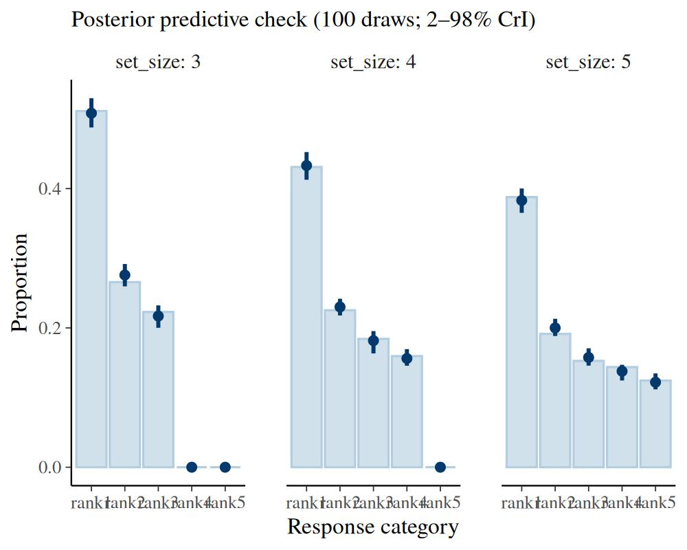
8 Post-processing reference
| Function | Models | Returns |
|---|---|---|
roc_sdt() |
binary, rating | model-implied smooth ROC curve + operating points (criterion levels for multi-criteria binary; confidence thresholds for rating) |
roc_observed() |
binary, rating | empirical ROC points from the data |
auc_sdt() |
binary, rating | posterior AUC |
latent_sdt() |
all four | noise/signal latent densities + criterion/threshold locations (no boundary for m-AFC/ranking) |
sdt_thresholds() |
rating | K-1 threshold locations per draw on the latent scale, with posterior summary |
sdt_sensitivity() |
all four | sensitivity converted per draw to \(d_a\), \(d_N\), and \(d_S\), with posterior summary |
plot() |
bmm_sdt_roc (incl. scale = "quantile"), bmm_sdt_auc, bmm_sdt_latent
|
ggplot2 ROC / quantile-ROC / AUC / latent-distribution figures |
pp_check() |
all four | posterior predictive check |